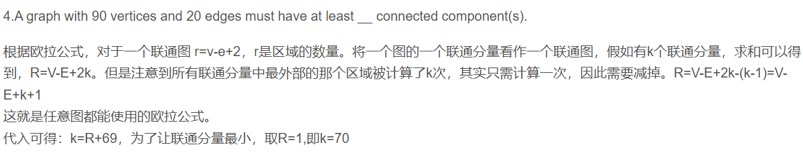
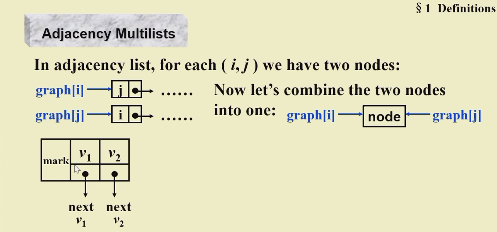
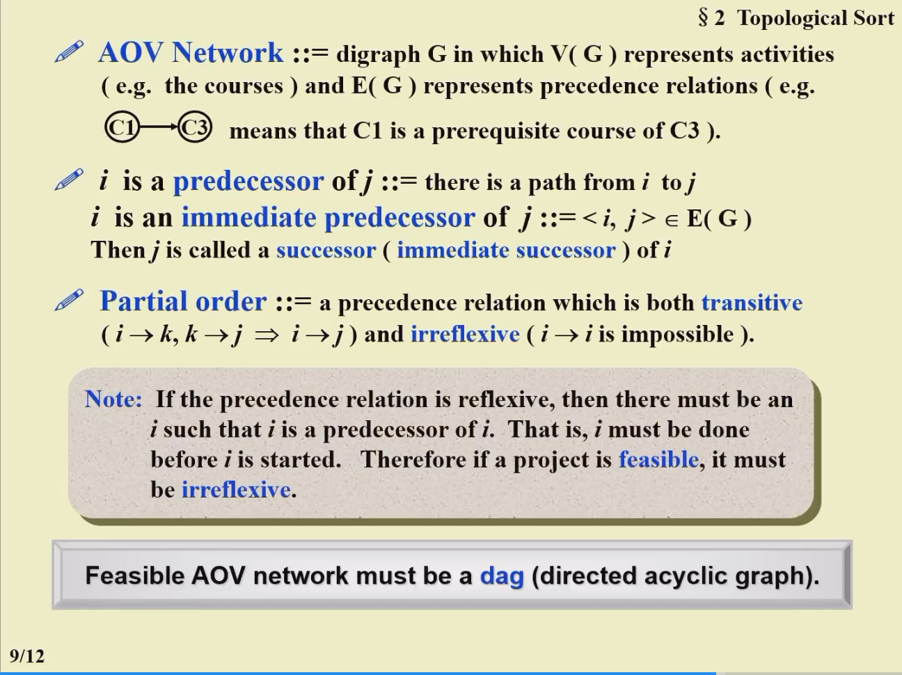
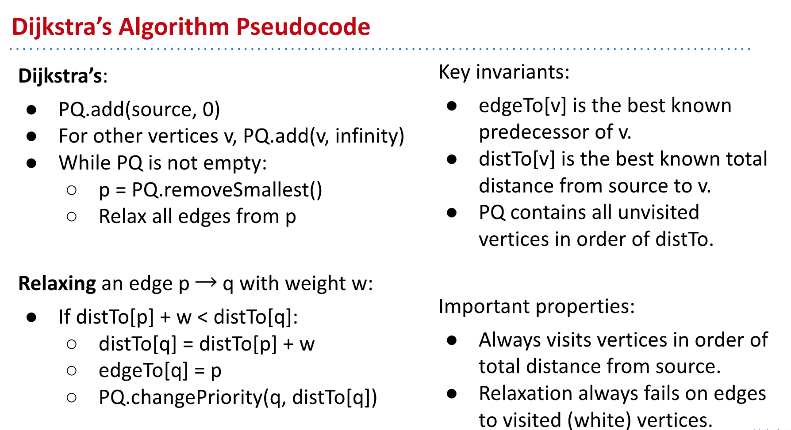
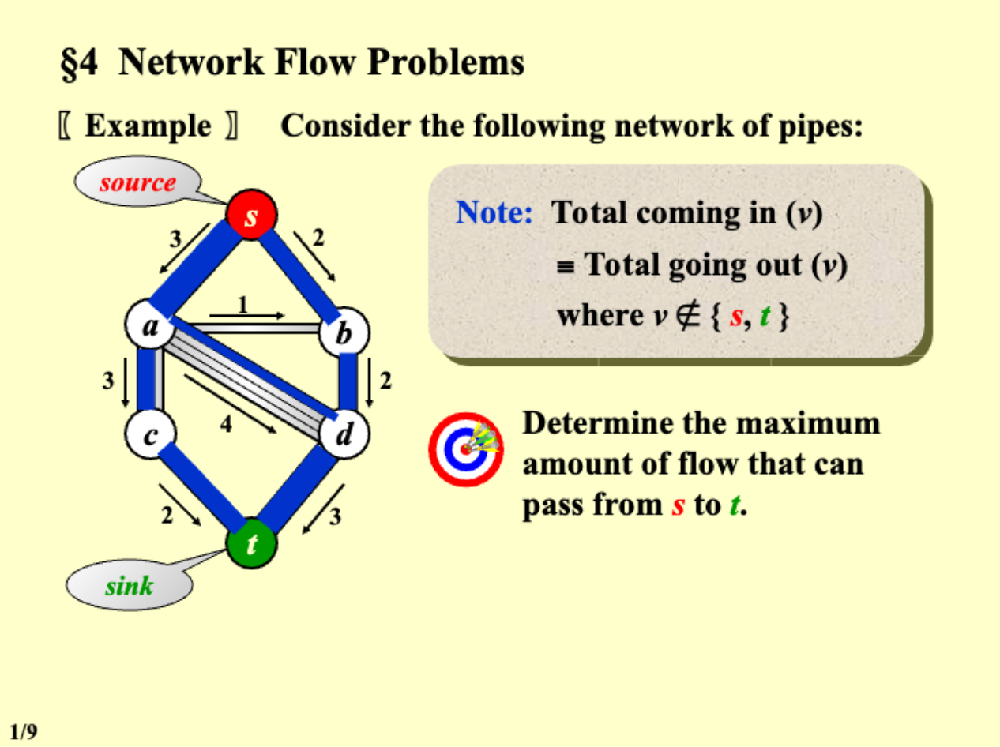
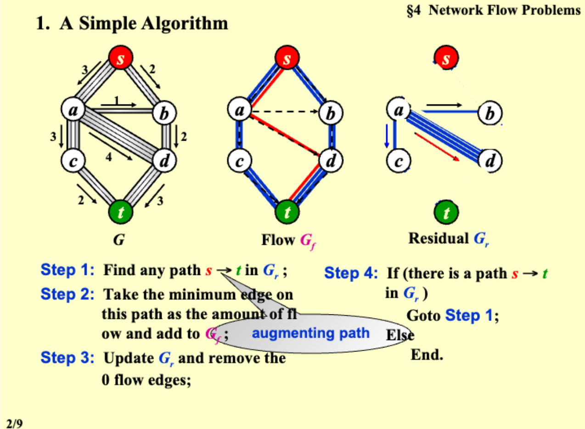
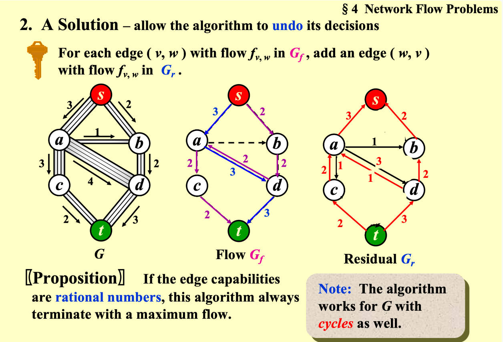
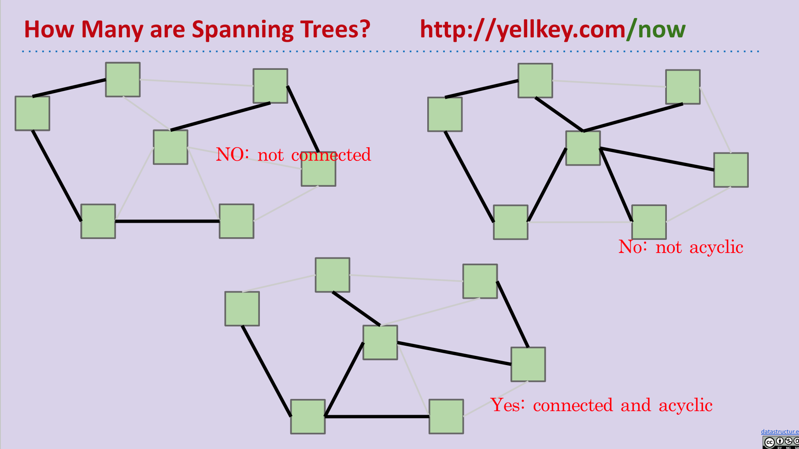
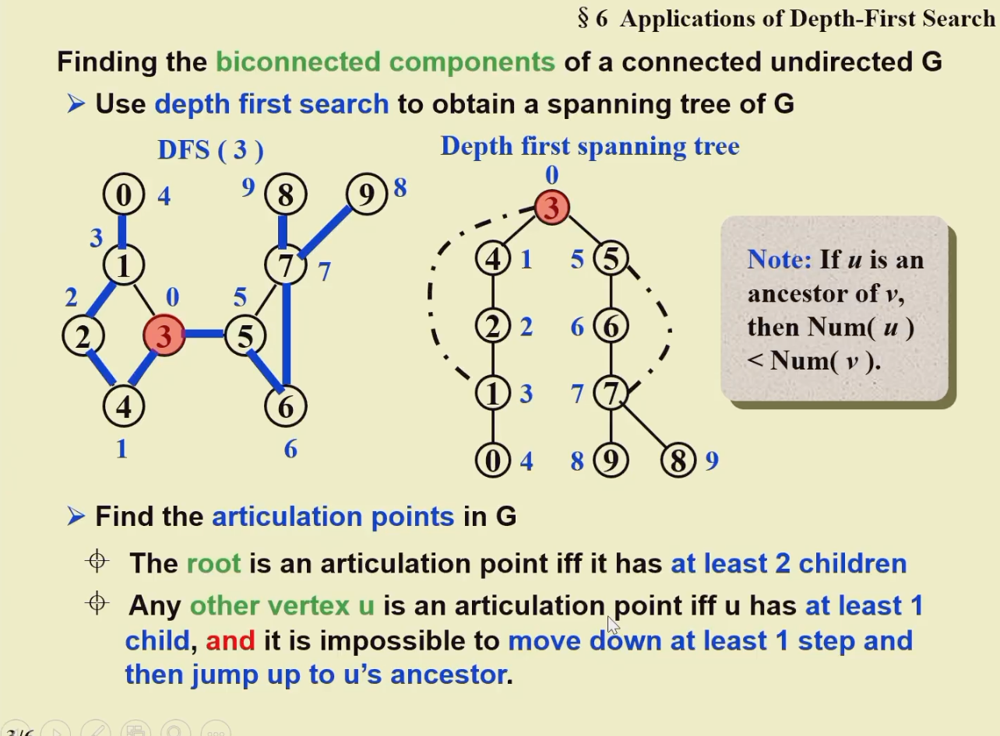
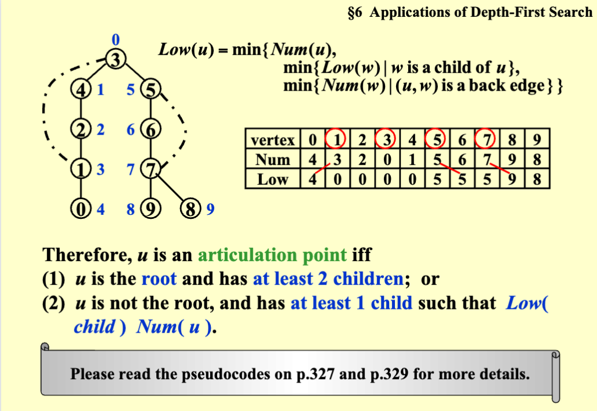

Graph
图 Graph¶

邻接矩阵 Adjacency Matrix¶
邻接链表 Adjacency Lists¶
读图的函数：
typedef int Vertex; /* vertices are numbered from 0 to MaxVertices-1 */
typedef struct VNode *PtrToVNode;
struct VNode {
Vertex Vert;
PtrToVNode Next;
};
typedef struct GNode *Graph;
struct GNode {
int NumOfVertices;
int NumOfEdges;
PtrToVNode *Array;
};
Graph ReadG() {
Graph G = (Graph)malloc(10000 * sizeof(Vertex));
scanf("%d %d", &(G->NumOfVertices), &(G->NumOfEdges));
G->Array = (PtrToVNode *)malloc(G->NumOfVertices * sizeof(PtrToVNode));
for (int i = 0; i < G->NumOfVertices; i++) {
G->Array[i] = NULL;
}
for (int i = 0; i < G->NumOfEdges; i++) {
Vertex v1, v2;
scanf("%d %d", &v1, &v2);
PtrToVNode newNode = (PtrToVNode)malloc(sizeof(struct VNode));
newNode->Vert = v2;
newNode->Next = NULL;
if (G->Array[v1] == NULL) {
G->Array[v1] = newNode;
} else {
PtrToVNode currentNode = G->Array[v1];
while (currentNode->Next != NULL) {
currentNode = currentNode->Next;
}
currentNode->Next = newNode;
}
}
return G;
}
在每一个 List 里 order doesn't matter
有向图 List
Adjacency MultiList 邻接十字链表¶


最短路径¶
DFS 深度优先搜索¶
https://zhuanlan.zhihu.com/p/24986203
int goal_x = 9, goal_y = 9; //目标的坐标，暂时设置为右下角
int n = 10 , m = 10; //地图的宽高，设置为10 * 10的表格
int graph[n][m]; //地图
int used[n][m]; //用来标记地图上那些点是走过的
int px[] = {-1, 0, 1, 0}; //通过px 和 py数组来实现左下右上的移动顺序
int py[] = {0, -1, 0, 1};
int flag = 0; //是否能达到终点的标志
void DFS(int graph[][], int used[], int x, int y)
{
// 如果与目标坐标相同，则成功
if (graph[x][y] == graph[goal_x][goal_y]) {
printf("successful");
flag = 1;
return ;
}
// 遍历四个方向
for (int i = 0; i != 4; ++i) {
//如果没有走过这个格子
int new_x = x + px[i], new_y = y + py[i];
if (new_x >= 0 && new_x < n && new_y >= 0
&& new_y < m && used[new_x][new_y] == 0 && !flag) {
used[new_x][new_y] = 1; //将该格子设为走过
DFS(graph, used, new_x, new_y); //递归下去
used[new_x][new_y] = 0;//状态回溯，退回来，将格子设置为未走过
}
}
}
BFS 广度优先搜索¶
int n = 10, m = 10; //地图宽高
void BFS()
{
queue que; //用队列来保存路口
int graph[n][m]; //地图
int px[] = {-1, 0, 1, 0}; //移动方向的数组
int py[] = {0, -1, 0, 1};
que.push(起点入队); //将起点入队
while (!que.empty()) { //只要队列不为空
auto temp = que.pop(); //得到队列中的元素
for (int i = 0; i != 4; ++i) {
if(//可以走) {
//标记当前格子
//将当前状态入队列，等待下次提取
}
}
}
}
unweighted¶
void Unweighted(Table T) {
int CurrDist;
Vertex V, W;
Q = CreateQueue(MaxSize);
Enqueue(S, Q);
while (!IsEmpty(Q)) {
V = Dequeue(Q);
for each W adjacent to V
if (T[W].Dist == Infinity) {
T[W].Dist = T[V].Dist + 1;
T[W].Path = V;
Enqueue(W, Q);
}
}
DisposeQueue(Q)
}
Dijkstra algorithm¶
Dijstra algrithm Demo in CS61B
Visit vertices in order of best-known distance from source. On visit, relax every edge from the visited vertex. Dijkstra’s is guaranteed to return a correct result if all edges are non-negative.
伪代码：
void Dijkstra(Table T) {
Vertex V, W;
for ( ; ; ) {
V = smallest unknown distance vertex;
if (V == NotAVertex) {
break;
}
T[V].Known = True;
for each W adjacent to V {
if (T[V].Dist + Cvw < T[W].Dist) {
Decrease(T[W].Dist to T[V].Dist + Cvw);
T[W].Path = V;
}
}
}
}

判断是否是 Dijkstra 路径：
bool IsDij(int *Seq) {
int dist[MaxN]; /**< Array to store the shortest distance from the source vertex */
bool known[MaxN]; /**< Array to track whether a vertex is known or not */
// Initialize the distance array and known array
for (int i = 1; i < Nv + 1; i ++) {
dist[i] = INF; // Initialize the distance of all vertices to infinity
known[i] = false; // Set all vertices as unknown
}
dist[Seq[0]] = 0; // Set the distance of the source vertex to 0
for (int i = 0; i < Nv; i ++) { // Calculate the distance array
int min = INF;
int min_index = -1;
// Find the unknown vertex with the smallest distance
for (int j = 1; j < Nv + 1; j ++) {
if (known[j] == false && dist[j] < min) {
min = dist[j];
min_index = j;
}
}
if (min == INF) { // If no vertex is found, it means the remaining vertices are unreachable
break;
}
known[min_index] = true; // Mark the vertex as known
// Update the distance array
for (int j = 1; j < Nv + 1; j ++) {
if (known[j] == false && G[min_index][j] != INF) {
if (dist[j] > dist[min_index] + G[min_index][j]) {
dist[j] = dist[min_index] + G[min_index][j];
}
}
}
}
for (int i = 0; i < Nv-1; i ++) { // Check the distance array
if (dist[Seq[i]] > dist[Seq[i + 1]]) {
return false; // If the distance of any vertex violates the shortest path condition, return false
}
}
return true; // If the distances of all vertices satisfy the shortest path condition, return true
}
有负路径
void WeightedNegative(Table T) {
Queue Q;
Vertex V, W;
Q = CreateQueue(NumVertex);
MakeEmpty(Q);
Enqueue(S, Q); /* Enqueue the source vertex */
while (!IsEmpty(Q)) {
V = Dequeue(Q);
for (each W adjacent to V) {
if (T[V].Dist + Cvw < T[W].Dist) {
T[W].Dist = T[V].Dist + Cvw;
T[W].Path = V;
if (!IsEnqueued(W, Q)) {
Enqueue(W, Q);
}
}
}
DispoeseQueue(Q); /* free memory */
}
}
augmenting path 增广路径¶
[!Note] Total coming in (v) = Total going out(v)

1. A simple algorithm¶


Spanning Tree¶
对于无向图，连接所有图的节点，并且没有环：Connected and Acyclic

Prim's algorithm -grow a tree(very similar to Dijkstra algorithm)¶
Kruskal's Algorithm - maintain a forest¶
void Kruskal ( Graph G )
{ T = { } ;
while ( T contains less than |V| - 1 edges && E is not empty ) {
choose a least cost edge (v, w) from E ;
delete (v, w) from E ;
if ( (v, w) does not create a cycle in T )
add (v, w) to T ;
else
discard (v, w) ;
}
if ( T contains fewer than |V| - 1 edges )
Error ( “No spanning tree” ) ;
}
UniqueMST check，在 Build MST 时判断¶
实现思路：¶
- 定义一个结构体
Edge，用于表示图的边，包括边的起点v1、终点v2、权重weight，以及一个布尔值IsTreeEdge，表示该边是否 可以在最小生成树 中。 ReadGraph函数用于读取图的信息。首先读取顶点数Nv和边数Ne，然后依次读取每条边的起点、终点和权重，并将其存储在edges数组中。最后，使用快速排序（qsort）对边进行按权重的 升序排序 。BuildMST函数用于构建最小生成树。首先初始化变量，将flag设置为true，表示最小生成树存在。component表示当前图的连通分量个数，初始化为顶点数Nv。alWeight表示最小生成树的总权重，初始化为 0。- 使用 并查集数据结构 来判断边是否在同一个连通分量中。首先初始化并查集，每个顶点的父节点为自身。然后进行边的遍历，根据边的权重进行分组。
- 对于每组权重相同的边，遍历这组边，并判断边的两个顶点是否属于不同的连通分量。若属于 不同 的连通分量，则该边添加到最小生成树中，更新总权重
alWeight， 合并 两个顶点所在的连通分量，并将component减一。如果边已经在最小生成树中，将flag设置为false。 - 完成一组权重相同的边的处理后，继续处理下一组权重相同的边，直到所有边都被处理完。
- 返回最小生成树的总权重
alWeight。 - 在
main函数中，首先调用ReadGraph读取图的信息，然后调用BuildMST构建最小生成树并获取总权重。根据情况输出结果：如果顶点数为 0，则输出 "No MST"；如果连通分量个数小于等于 1，则输出最小生成树的总权重，并根据flag输出 "Yes" 或 "No"；如果连通分量个数大于 1，则输出 "No MST" 和连通分量个数。
代码实现：¶
typedef struct {
int v1, v2, weight;
bool IsTreeEdge;
} Edge;
int BuildMST(void) {
flag = true;
component = Nv;
int alWeight = 0;
for (int i = 0; i < Nv; i++) {
parent[i] = i;
}
for (int i = 0; i < Ne;) {
int j = i;
for (; j < Ne && edges[j].weight == edges[i].weight; j++) {
if (FindParent(edges[j].v1) != FindParent(edges[j].v2)) {
edges[j].IsTreeEdge = true;
}
}
for (int k = i; k < j; ++k) {
if (FindParent(edges[k].v1) != FindParent(edges[k].v2)) {
alWeight += edges[k].weight;
Union(edges[k].v1, edges[k].v2);
component--;
} else if (edges[k].IsTreeEdge == true) {
flag = false;
}
}
i = j;
}
return alWeight;
}
图的遍历与连通¶
DFS 实现图的前序遍历¶
void DFS(Vertex V) { // Linked List
Visited[V] = True;
for (each W adjecent to V) {
if (Visited[W] != True) {
DFS(W);
}
}
}
void ListComponents(Graph G) {
for (each V in G) {
if (!Visited[V]) {
DFS(V);
printf("\n");
}
}
}
Biconnectivity¶
articulation point 关节点: 删掉其中一个顶点 v，得到的 G' 有至少两个联通的 components
Biconnected Graph ：G is connected and has no articulation point 没有关节点
Biconnected component 双联通组件: a maximal biconnected subgraph 最大的没有关节点的子图
利用 DFS 找一个图的双联通组件¶


有向图的强连通组件寻找（使用邻接链表实现）：
- 函数
Dfs接受三个参数：图 G、起始顶点 v 和一个函数指针visit，用于处理访问到的顶点。 - 首先，将顶点 v 标记为已访问（
visited[v] = 1），并为顶点 v 设置序号 num[v] 和 low[v]，cnt++ 表示当前的访问次序。 - 将顶点 v 入栈（
stack[++top] = v），同时将 inStack[v] 标记为 1，表示顶点 v 在栈中。 - 遍历顶点 v 的邻接顶点 w，使用指针 w 指向图 G 中顶点 v 的邻接表（
w = G->Array[v]）。 - 对于每个未访问过的邻接顶点 w->Vert，递归调用
Dfs函数对其进行深度优先搜索（Dfs(G, w->Vert, visit)）。- 在递归调用之前，更新顶点 v 的 low[v] 值为 min(low[v], low[w->Vert])。
- 如果邻接顶点 w->Vert 已经被访问过且在栈中（
inStack[w->Vert] == 1），更新顶点 v 的 low[v] 值为 min(low[v], num[w->Vert])。 - 在遍历完所有邻接顶点之后，如果 num[v] 等于 low[v]，表示顶点 v 是一个强连通分量的起始顶点。
- 通过循环，将栈中顶点逐个出栈，同时调用
visit函数进行处理，直到栈顶元素等于 v。 - 每次出栈的顶点都被标记为不在栈中（
inStack[stack[top]] = 0），top 减 1。 - 最后，处理顶点 v（调用
visit(v)），并将其标记为不在栈中（inStack[v] = 0），top 减 1。 - 输出一个换行符，表示一个强连通分量的输出结束。
- 通过循环，将栈中顶点逐个出栈，同时调用
- 这样，函数
Dfs将会对图 G 中的所有顶点进行深度优先搜索，并找到所有的强连通分量。
void StronglyConnectedComponents( Graph G, void (*visit)(Vertex V) ) {
for (int i = 0; i < G->NumOfVertices; i++) {
if (visited[i] == 0) {
Dfs(G, i, visit);
}
}
}
void Dfs(Graph G, Vertex v, void (*visit)(Vertex V)) {
visited[v] = 1;
num[v] = cnt++;
low[v] = num[v];
inStack[v] = 1;
stack[top] = v;
top++;
PtrToVNode currentNode = G->Array[v];
while (currentNode != NULL) {
if (visited[currentNode->Vert] == 0) {
Dfs(G, currentNode->Vert, visit);
low[v] = min(low[v], low[currentNode->Vert]);
} else if (inStack[currentNode->Vert] == 1) {
low[v] = min(low[v], low[currentNode->Vert]);
}
currentNode = currentNode->Next;
}
if (num[v] == low[v]) {
while(inStack[v] == 1) {
top--;
visit(stack[top]);
inStack[stack[top]] = 0;
}
printf("\n");
}
}
// visit function is print
void PrintV( Vertex V )
{
printf("%d ", V);
}
Euler Circuits 欧拉回路¶
一笔不重复遍历完所有的边回到起点
欧拉回路 Euler Circuit：所有的顶点度数都是偶数
欧拉路径 Euler Tour：有两个顶点有奇数边